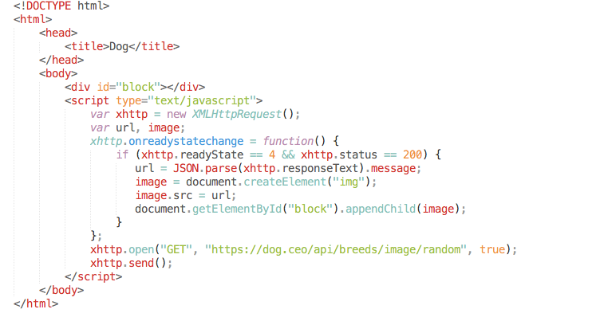
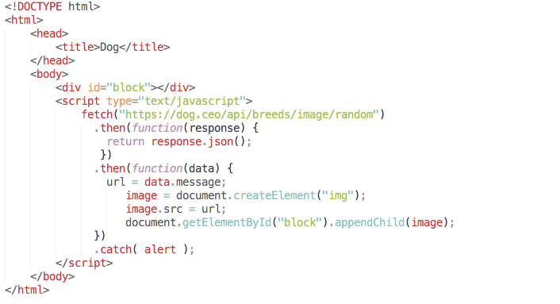

AJAX (аббревиатура от «Asynchronous Javascript And Xml») – технология, которая позволяет клиенту общаться с сервером без перезагрузки страницы, асинхронно.
В основе технологии лежит использование нестандартного объекта XMLHttpRequest для взаимодействия со скриптами на стороне сервера.
Методы и свойства httpRequest
httpRequest.onreadystatechange
httpRequest.open
httpRequest.send
httpRequest.setRequestHeader
httpRequest.readyState
httpRequest.status
httpRequest.responseText
Методы запроса HTTP
HTTP (HyperText Transfer Protocol) — протокол прикладного уровня передачи данных.
OPTIONS
GET
HEAD
POST
PUT
PATCH
DELETE
TRACE
CONNECT
Коды состояния
Код состояния является частью первой строки ответа сервера. Он представляет собой целое число из трёх цифр.
1xx - Информационные
2хх - Успех
3хх - Перенаправление
4xx - Ошибка клиента
5xx - Ошибка сервера
Зайти на произвольный сайт, открыть инструменты разработчика и ознакомиться с запросами (метод, тело запроса, ответ).
Пример

fetch
Метод fetch – это XMLHttpRequest с улучшенным интерфейсом - построен на промисах.
При вызове fetch возвращает промис, который, когда получен ответ, выполняет коллбэки с объектом Response или с ошибкой, если запрос не удался.
let promise = fetch(url[, options]);
url – URL, на который сделать запрос
options – необязательный объект с настройками запроса
Свойства options
method – метод запроса.
headers – заголовки запроса (объект).
body – тело запроса: FormData, Blob, строка и т.п.
mode – одно из: «same-origin», «no-cors», «cors», указывает, в каком режиме кросс-доменности предполагается делать запрос.
credentials – одно из: «omit», «same-origin», «include», указывает, пересылать ли куки и заголовки авторизации вместе с запросом.
cache – одно из «default», «no-store», «reload», «no-cache», «force-cache», «only-if-cached», указывает, как кешировать запрос.
redirect – можно поставить «follow» для обычного поведения при коде 30x (следовать редиректу) или «error» для интерпретации редиректа как ошибки.
Объект response даёт возможность прочитать его тело:
response.arrayBuffer()
response.blob()
response.formData()
response.json()
response.text()
Пример

Promise
Предоставляют удобный способ организации асинхронного кода.
Promise – это объект, который имеет следующие состония: вначале pending («ожидание»), затем – одно из: fulfilled («выполнено успешно») или rejected («выполнено с ошибкой»).
promise.then(onFulfilled, onRejected).
promise.catch(onRejected) - поставить обработчик только на ошибку.
new Promise(function(resolve, reject) {}).
Цепочки промисов.
Параллельное выполнение, resolve, reject
Promise.all(iterable)
Promise.race(iterable)
Promise.resolve(value) - создаёт успешно выполнившийся промис с результатом value.
Promise.reject(value) - создаёт уже выполнившийся промис, но не с успешным результатом, а с ошибкой error.